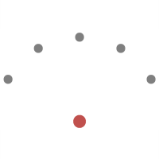
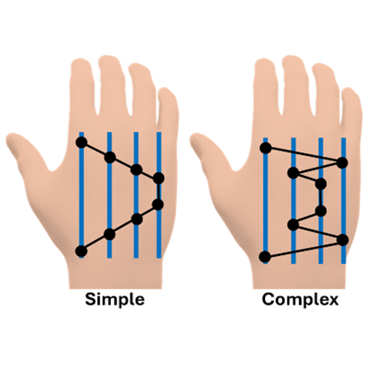
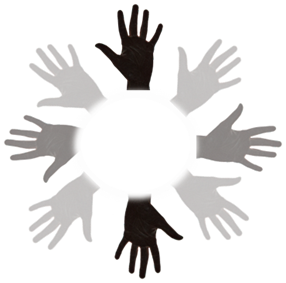
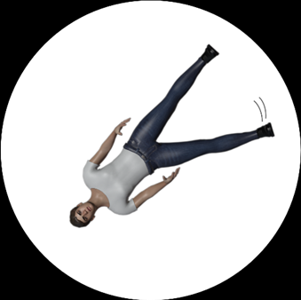
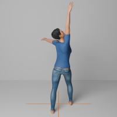

This website is designed to provide an index of open source tasks used to measure movement imagery ability (i.e. how well people can imagine performing movements).
Our hope is that this resource will provide researchers and clinicians with standardized, ready-to-use tasks that will enable the collection of normative data when assessing different aspects of movement imagery ability. The open-source nature of the included tasks also means that they can be readily adapted for specific situations (including the ability to easily implement versions of the tasks in the user's native language).
These ideas will be developed more formally in our forthcoming preprint, which will be available in the near future.
Click the title to learn more about each task:
| Task | Dimension(s) | Measure(s) | Imagery Instruction | Exclusion Criteria | Required Equipment | Approx. Duration | Reference |
|---|---|---|---|---|---|---|---|
| Chronometric Radial Fitts’ Task | Manipulation, maintenance (timing) | Deviation between execution and imagery in difficulty–duration effects | Explicit: IVI + KIN | Task-related motor impairment: dominant hand tapping, non-dominant hand keypress | Standard computer with sturdy tapping surface (e.g., touchscreen), fine-tipped stylus | 10-15 min | Czilczer et al. (2025) |
| Imagined Finger Sequence Task | Maintenance | Discrepancy between execution and imagery durations | Explicit: IVI + KIN | Finger individuation | Standard computer | 10-15 min | Moreno-Verdú et al. (2025) |
| Hand Laterality Judgement Task | Manipulation | Accuracy, Response time, Biomechanical constraints effect | Implicit: IVI + KIN | Right-left disorientation | Standard computer | 15-20 min | Moreno-Verdú et al. (2024) |
| Mental Body Rotation Task | Manipulation | Accuracy, Response times | Implicit: IVI + KIN | Right-left disorientation | Standard computer | 10 min | Dahm et al. (2022) |
| Final Position Judgement Task | Primary: manipulation, maintenance, Secondary: generation, inspection | Accuracy, Response time | Explicit: IVI + KIN | Right-left disorientation, Hearing impairment | Standard computer with Audio | 20 min | Czilczer et al., Forthcoming |
Chronometric Radial Fitts' Task (CRFT) |
||
|---|---|---|
| Type: | Mental Chronometry |  |
| Dimension(s): | Manipulation, maintenance (timing) | |
| Repository: | https://github.com/carlacz/CRFT | |
| Citation: | Czilczer et al., (preprint) | |
|
The Chronometric Radial Fitts’ Task (CRFT; Czilczer et al., 2025), adapted from the Virtual Radial Fitts’ Task (e.g., Caeyenberghs et al., 2009), was developed to address limitations of using deviations from execution durations as an indicator of movement imagery ability. By incorporating Fitts’ law (Fitts, 1954), it assesses the extent to which the lawful relationship between movement difficulty and duration is preserved in imagery relative to execution, thereby requiring participants to integrate movement constraints into their mental simulations. After a comprehension check and familiarization, participants complete two blocks: execution and imagery. Therein, they execute or imagine tapping between a central circle and radially arranged targets with the dominant hand as quickly and accurately as possible. Each executed or imagined tap is accompanied by a spacebar press with the non-dominant hand. Movement difficulty is manipulated according to Fitts’ law, with five difficulty levels presented repeatedly and in random order. Taps are not actively processed, but a touchscreen monitor is recommended as a sturdy tapping surface. |
||
Imagined Finger Sequence Task (iFST) |
||
|---|---|---|
| Type: | Mental Chronometry |  |
| Dimension(s): | Maintenance | |
| Repository: | https://github.com/mmorenoverdu/iFST | |
| Citation: | Moreno-Verdú et al., (preprint) | |
|
The iFST is adapted from various sequence-learning paradigms frequently used to study motor control (Doyon et al. 1997). Participants are asked to type and imagine finger sequences, and the time employed is measured (Dahm et al. 2023). During imagery, participants must simulate pressing the keys until the sequence is completed, hence the paradigm assesses the ability to maintain movement imagery. This version of the task, as developed by Moreno-Verdú et al. (in prep.), consists in typing/imagining different 8-digit sequences with the index, middle, ring and little fingers of the dominant hand. The present implementation employs two types of sequences that differ based on their complexity (considering the number of changes in direction, with equivalent number of repeats per digits). This allows to observe effects of sequence complexity on both execution and imagery times, as a fundamental effect of the paradigm. |
||
Hand Laterality Judgement Task (HLJT) |
||
|---|---|---|
| Type: | Mental Rotation |  |
| Dimension(s): | Manipulation | |
| Repository: | https://github.com/mmorenoverdu/HLJT | |
| Citation: | Moreno-Verdú et al., 2025 | |
|
The HLJT was first introduced by Cooper and Shepard (1975), who proposed that participants "determine whether a visually presented hand is left or right by moving a mental "phantom" of one of their own hands into the portrayed position and by then comparing its imagined appearance against the appearance of the externally presented hand." Many variants of the task have subsequently been examined in the context of studies of motor imagery. The "biomechanical constraints effect", an effect where hands presented in more physically easy to achieve (medial) rotations are processed faster than those with more difficult (lateral) rotations is considered to be a hallmark of the use of motor imagery in the task. This version of the task, as developed by Moreno-Verdu et al., (2025), presents hands at 8 angles (0° through 315° in 45° increments) in a 'palmar' or 'dorsal' view. This implementation has been verified to provide equivalent results when participants responded using different effectors (e.g. the feet, bimanually, or unimanually), making it feasible for use with participants with impairments in a specific effector. |
||
Mental Body Rotation Task (MBRT) |
||
|---|---|---|
| Type: | Mental Rotation |  |
| Dimension(s): | Perspective taking | |
| Repository: | https://osf.io/ymf8w | |
| Citation: | Dahm et al., 2022 | |
|
The mental body rotation task is a cognitive test used to assess a person's ability to mentally simulate changes in body position (Steggemann et al., 2011). Participants are shown images of human figures in various orientations and are asked to judge whether the figure's left or right hand (or foot) is raised (Dahm et al., 2022). To do this correctly, they either mentally rotate their own body or the pictured figure in order to establish a perspective overlap of both. Response times are usually longer the larger the rotational angle. Hence for mental rotations on the horizontal axis, responses take longer for head-down pictures than for head-up pictures. On the vertical axis, responses take longer for face-to-face pictures than for back-view pictures (that are already aligned with the own perspective). This version of the task, as developed by Dahm et al. (2022), presents 64 gender neutral avatar pictures of a human being including back and front view perspectives with either a raised foot or hand. The rotational angels include head-up pictures (-45, 0, 45) and head-down pictures (-135, 180, 135). To check participants’ understanding of the instruction, the main block is preceded by eight familiarization trials. |
||
Final Position Judgement Task (FPJT) |
||
|---|---|---|
| Type: | Imagery-Stimulus Comparison |  |
| Dimension(s): | Generation, Manipulation, Maintenance, Inspection | |
| Repository: | https://github.com/carlacz/FPJT | |
| Citation: | Czilczer et al., (in preparation) | |
|
In the Final Position Judgement Task (FPJT), participants imagine executing a sequence of auditorily instructed movements and then judge whether the image of a human figure matches their imagined final position. The FPJT adapts earlier imagery–stimulus comparison tasks (e.g., Madan & Singhal, 2013; Naito, 1994; Schott, 2013). The task starts with a familiarization with the auditory and visual stimuli, a comprehension check, and practice trials. Participants then complete 32 trials in random order. With eyes closed, they hear four to seven auditory instructions per trial, each involving a movement of the head, torso, or a limb (left or right arm or leg). Visual rehearsal during imagery is associated with higher accuracy and shorter response times, whereas reliance on verbal rehearsal is associated with slower responses (Czilczer et al., 2025). |
||
The focus of this project is on behavioural tasks to assess movement imagery ability. However, self-report questionnaires have been frequently used in research and applied contexts. These questionnaires aim to assess the ability to generate movement imagery. If you are interested in using questionnaires, a dedicated repository can be found below
Movement Imagery Questionnaires Repository
This project is developed as a collaboration between research groups at the following institutions:
| Institution | Primary Contributor | Principle Investigator |
|---|---|---|
| Carla Czilczer | Stephan Dahm | |
| Marcos Moreno-Verdu | Robert Hardwick |